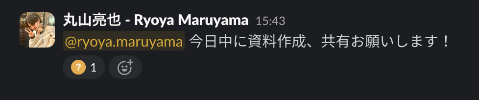
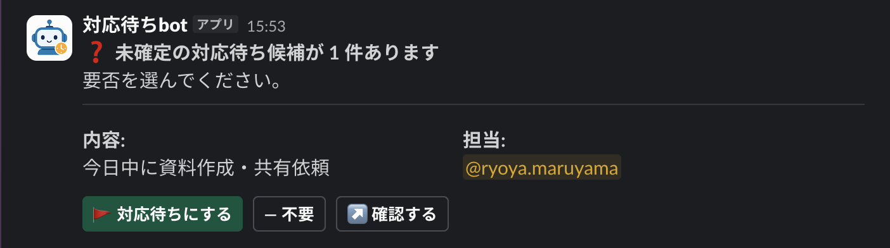
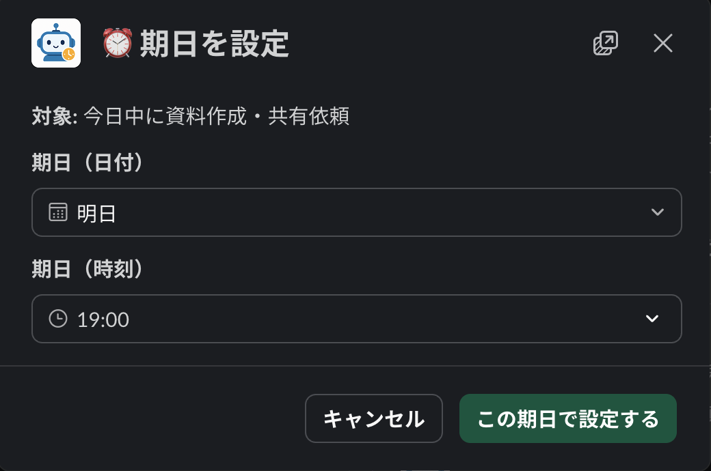
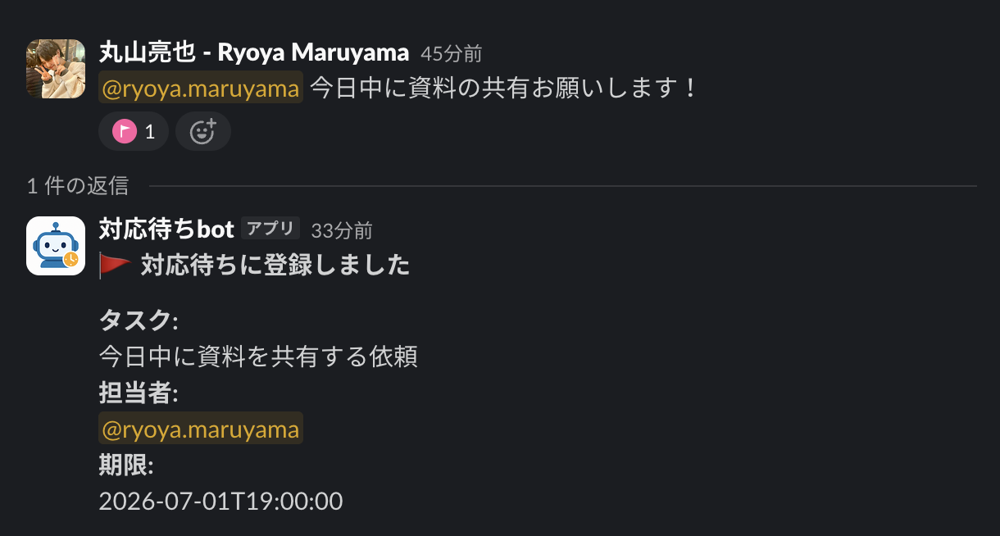
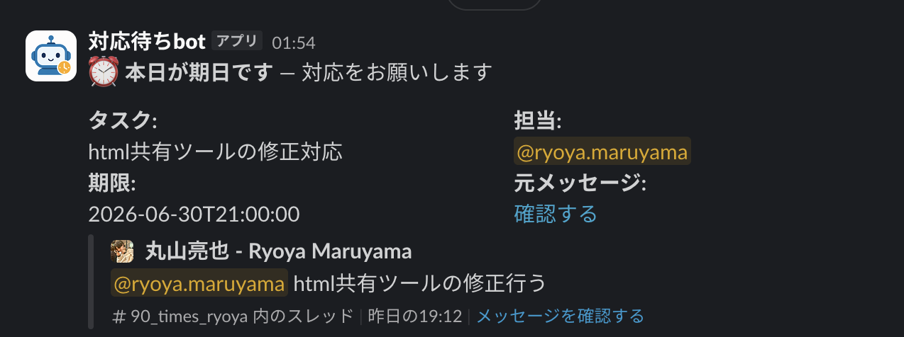
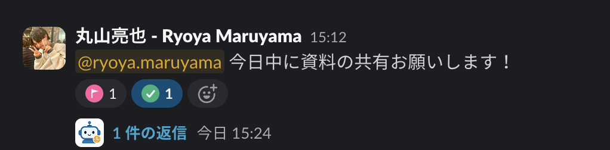

対応待ちっぽい依頼に、botが自動で ❓（確認中） スタンプを付けます。「これ対応待ちかも」と検知した印です。

botから 「未確定の対応待ち候補があります」 というDMが届きます。内容と担当を見て、🚩対応待ちにする か —不要 を選んでください。「不要」を選べば二度と聞かれません。

🚩対応待ちにする を押すと、期日設定の画面が開きます。AIが予定などから期日を提案してくれるので、確認して 「この期日で設定する」 を押すだけ。

これで追跡開始。依頼メッセージのスタンプが 🚩（対応待ち） に変わり、担当・期限がカードで表示されます。

前日・当日・期日を過ぎたタイミングで、担当者にお知らせが届きます。覚えておく負担はもう要りません。

対応が終わったら、その依頼メッセージに ✅（完了） スタンプを付けるだけ。これでリマインドは止まり、対応待ちリストから消えます。

検出時、各投稿について Claude（Opus）へ次の2つを送り、判定結果を受け取っています。
実装：backend/src/detection/classifier.ts
あなたはReBear（マーケ/クリエイティブ受託＋自社事業）のSlack運用アシスタント。
渡されたメッセージとスレッド文脈から、「誰かの対応・回答・成果物提出を待っている未充足の用件」を検出する。
ルール:
- 依頼/約束/確認要求＋メンションがあり、後続に成果物(file/link)・完了文・rb-done/rb-docが無ければ未充足。
- 予定(日時)に紐づく準備物の依頼で、その時刻が迫る/過ぎても成果物が無ければ escalate=true。
- 口頭/DM/別ch/Notionで済んでいる可能性は分からない前提。確信が持てない時は
resolved=false, confidence低め, needs_confirmation=true。
- owner(担当)はメンション先 or 「やります」宣言者。曖昧なら confidence を下げる。
必ず record_classification ツールを1回だけ呼び出して結果を返すこと。基準時刻: {現在時刻のISO}
判定対象メッセージ: {投稿本文}
スレッド文脈(新しい順): {親＋直近返信／なければ(なし)}
既存リアクション: {rb-* 等／なければ(なし)}
添付/リンク有無: file={true|false} / link={true|false}費用は ① Claude API（判定）・② サーバー・③ データベース の3つ。Slack API は無料です。
ここでは Amazon Lightsail（2GBプラン）にbot＋MySQLを同居させる構成＋ 1日の投稿 500〜2,000 件で試算します。
投稿ごとに1回 Opus を呼ぶので 費用 ≒ 発言数 × 1件あたり単価。1件あたり概ね $0.005〜0.02（中央値 約 $0.01）。
| 投稿数 | 1日あたり | 月額（×30日） |
|---|---|---|
| 1日 500 件 | $2.5〜10（中央値 約 $5） | 約 $75〜300（目安 $150） |
| 1日 1,000 件 | $5〜20（中央値 約 $10） | 約 $150〜600（目安 $300） |
| 1日 1,500 件 | $7.5〜30（中央値 約 $15） | 約 $225〜900（目安 $450） |
| 1日 2,000 件 | $10〜40（中央値 約 $20） | 約 $300〜1,200（目安 $600） |
Socket Mode は常時接続が必要なため、停止して$0にはできません。今回は Lightsail の 2GBプラン（月$12）を採用。bot常駐に余裕があり、同じサーバー内に MySQL も同居できます。
| サービス | 用途 | 月額 |
|---|---|---|
| Lightsail 2GB（2 vCPU / 60GB SSD） | bot本体を常時稼働＋DB同居 | $12 ※ 最初の90日間は無料 |
| cron（サーバー内のcrontab） | 確認・リマインドの定期実行 | $0（含む） |
| 静的IP | IP固定（再起動でも変わらない） | $0（無料） |
| 方式 | 用途 | 月額 |
|---|---|---|
| 同じLightsailに MySQL を同居 | タスク・通知履歴の永続化 | $0（サーバーに含む） |
| （参考）マネージドDBに分離する場合 | 運用を楽にしたい場合の選択肢 | ＋$9〜15 |
固定費は Lightsail $12（DB込み・最初90日無料）のみ。これに投稿量に比例する Claude 代が乗ります。
| 1日の投稿数 | Claude API | サーバー＋DB | 合計／月（目安） |
|---|---|---|---|
| 500 件 | $75〜300 | $12 | 約 $87〜312（$162） |
| 1,000 件 | $150〜600 | $12 | 約 $162〜612（$312） |
| 1,500 件 | $225〜900 | $12 | 約 $237〜912（$462） |
| 2,000 件 | $300〜1,200 | $12 | 約 $312〜1,212（$612） |
| 課題 | 内容 / 影響 |
|---|---|
| 全投稿を Opus で判定 | 前フィルタを外しているため、雑談を含む全発言で Opus が動く＝トークン消費が大きい。アクティブなチャンネルほどコスト増 |
| スレッド内の重複検出 | 同じスレッドの親と返信が別々のタスクとして重複登録されることがある（重複排除がメッセージ単位のため） |
| 担当推定の曖昧さ | 内容が不明確な依頼は担当(owner)が特定できず、確認DMの宛先が決まらないことがある |
| 口頭・別ツールでの完了が見えない | Slack外で対応が済んでも検知できない。完了は人が ✅ を付ける運用に依存 |
| 未実装の磨き込み | 手動フラグ時の重複防止、リアクション取り消し時の状態戻し、:rb-doc:＋成果物での自動クローズ等は今後の対応 |